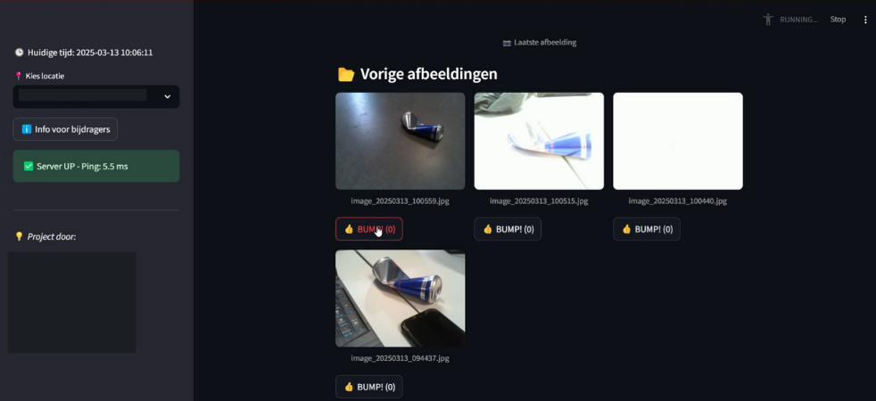

DumperBumper
DumperBumper is a hands-on project page for experiments, problem solving, and iterating on something useful.

A practical project focused on learning by doing, with a clear problem to solve and a tangible outcome to share.
Overview
A project solving real world problems with a practical usecase, anytime someone would throw trash on the ground. An AI was trained using "teachable machine", together with a camera module and a raspberry pi, to detect when someone throws trash on the ground. When the AI detects this, it will trigger a sound effect to play, to make the person aware of their action. This sounded like a good project for us, especially because our team noticed alot of litter on the ground around the city where our campus is located. We wanted to do something about this. However, instead of getting a month or so to work on this, we got just under a week, a great rush of dopamine and adrenaline to get this project working, and we did! We had a working prototype by the end of the week, and we were very proud of it. We got closer as a group, aswell as learning about different technologies!
Background
This project was made as part of the “IoT Essentials” course at Thomas More University of Applied Sciences. As one of the first group projects we worked on, we were placed together with other students following the same course. Luckily, my team quickly got to know each other, and before long, we were coordinating like a real team. My role focused on setting up AWS and the FastAPI backend to retrieve images from the bucket, make them available online, and send them to our frontend.
Technologies
- Python
- OpenCV
- Raspberry Pi
- Camera module
- Teachable Machine
- AWS S3
- FastAPI